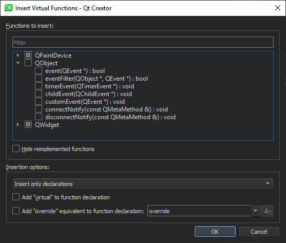

Apply quick fixes
To apply quick fixes while refactoring code, select them in a context menu in the code editor. The fixes available depend on the position of the cursor in the code editor.
- To apply quick fixes:
- In C++ code, right-click an operand, conditional statement, string, or name.
- In QML code, right-click an item ID or name.
- In the context menu, go to Refactoring and then select a quick fix.
Or, press Alt+Enter to open a context menu that has quick fixes available in the current cursor position.
By default, the refactored files are saved automatically. To turn off this feature, go to Preferences > Environment > System and select Auto-save files after refactoring.
Create functions
Apply quick fixes to implement member functions, insert virtual functions of base classes, create getter and setter functions, and generate constructors. Specify settings for generating the functions either globally for all projects or separately for each project in the build and run settings of the project.
Implement member functions
Apply the Create Implementations for Member Functions quick fix to create implementations for all member functions in one go. In the Member Function Implementations dialog, specify whether the member functions are generated inline or outside the class.
Insert virtual functions
Apply the Insert Virtual Functions of Base Classes quick fix to insert declarations and the corresponding definitions inside or outside the class or in an implementation file (if it exists).

Select the functions to insert in the list of available functions. Filter the list and hide reimplemented functions from it.
You can add virtual or the override equivalent to the function declaration.
Create getters and setters
Apply the Create Getter and Setter Member Functions quick fix to create either both getter and setter member functions for member variables or only a getter or setter.

Generate constructors
Apply the Generate Constructor quick fix to create a public, protected, or private constructor for a class. Select the class members to initialize in the constructor. Drag the parameters to specify their order in the constructor.

See also Find symbols, Specify settings for quick fixes, Quick Fixes, C++ Quick Fixes, Rename symbols, and QML Quick Fixes.